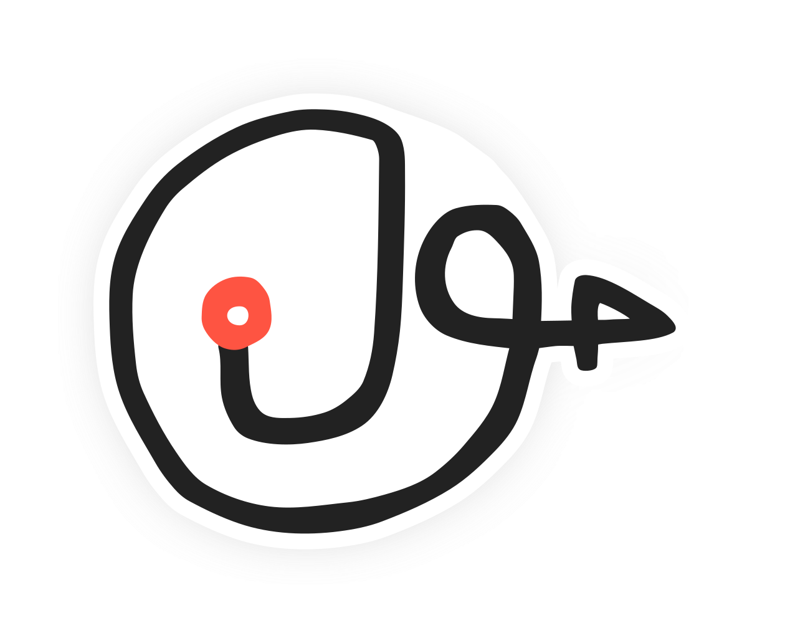

Jeg arbejder i rummet mellem idéer og kaos – hvor jeg hjælper mennesker med at komme videre gennem klarhed, test og samskabelse.
Når idéer er rodede, projekter går i stå, eller nye muligheder dukker op, hjælper jeg teams med at genfinde retningen og skabe reel fremdrift.
Jeg arbejder dér, hvor tingene er usikre, komplekse eller uafsluttede – og omsætter det til bevægelse.
⭕️ Workshops & testformater – til at udforske, udfordre og validere
⭕️ Strategisk visualisering – til at gøre idéer konkrete og beslutninger lettere
⭕️ Samskabelse & kaosledelse – til at skabe klarhed i kompleksitet og lede fra midten
Mit arbejde kombinerer kreativitet, struktur og praktisk erfaring.
Jeg hjælper mennesker og idéer videre – ikke med perfekte planer, men med jordnær handling.
Lad os finde det næste skridt – sammen.
3-timers fokuserede sessions med klar retning og energi.
1-3 måneders eksperimenter – lav risiko, høj læring.
Ledelse med blik for både mennesker og mål – fleksibelt og effektfuldt.
Jeg forstår virksomheden og menneskene – og skaber handling ud fra indsigt og ideer.
Jeg elsker at lede forandring og finder altid en vej frem – også når det virker umuligt. Min baggrund i energisektoren kombineret med en kreativ tilgang fra designverdenen gør mig til en krøllet ingeniørhjerne med holistisk blik.
